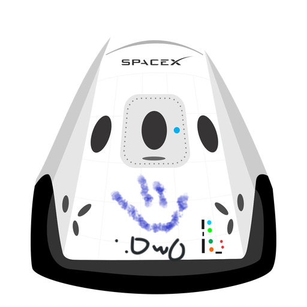

Ahr_keeb
Tu blog de confianza
Este es el título atractivo e interestante UwU
Y este es el párrafo de inicio donde voy a poner muchas cosas interesantes sober hobbies que me interesen OwO.

Un hobbie muy bonito es el de los teclados custom, en el cual tu puedes personalizar al máximo tu teclado, siento yo algo importante si pasas mucho tiempo en la computadora.
#tactilgang